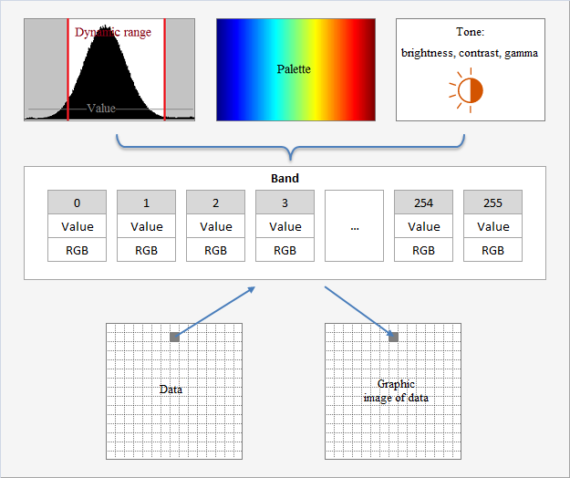

Unit: DeLaFitsGraphics
Type: class
Inherited from: System.TObject
Member Of: TFitsGraphic
Description:
The class is designed for color correction of the graphic image of data: histogram, palette, brightness, contrast, gamma.
of the graphic image of data: histogram, palette, brightness, contrast, gamma.
DeLaFits uses a method of histogram to create a graphic image of data. The histogram (dynamic range) and the palette creates Band. Band defines the relationship between the physical value a pixel of data and the RGB-color a pixel of graphic image of data.

When you create an object TFitsGraphic the histogram is not built at once. The histogram is automatically created when the first call a method TFitsGraphic.GraphicRead, or user can create the histogram a manually by a method HistogramUpdate.
Constructor & Destructor
constructor Create |
The constructor. TFitsGraphic creates this object |
destructor Destroy; override |
The destructor. TFitsGraphic destroys this object |
Public methods
HistogramIsMake |
Checks the fact of creation a histogram |
HistogramUpdate |
Creates a histogram over again |
HistogramDynamicRangeDefault |
Set the dynamic range of the histogram by default |
Set the brightness, the contrast and the gamma simultaneously |
|
ToneDefault |
Set the brightness, the contrast and the gamma simultaneously by default |
Public property
Fits reference |
Reference to the owner - TFitsGraphic, see topic Architecture |
Band readonly |
Relationship between the physical value of the pixel of data and the RGB-color of the pixel of graphic image of data |
Histogram readonly |
Histogram of physical values of data (pixels) of the frame |
HistogramMeasure readonly |
Parameters of the histogram of the pixels of frame: count of pixels, count of items (ranks), minimum, maximum, median and value of dynamic range |
The value of dynamic range of the histogram |
|
ToneBrightness |
The brightness of the graphic image of data |
ToneContrast |
The contrast of the graphic image of data |
ToneGamma |
The gamma of the graphic image of data |
The palette of the graphic image of data |
|
PaletteOrder |
The order of palette of the graphic image of data: direct or reverse |
See Also:
—
Created with the Personal Edition of HelpNDoc: Easily create Web Help sites
Copyright © 2013-2016, Evgeniy Dikov
Support: delafits.library@gmail.com
Sources: https://github.com/felleroff/delafits